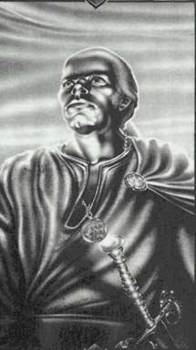

Далт.Белокурые волосы, крупный, мускулистый. Никому не потакающий и могучий, Далт отлично соответствует образу хладнокровного наемника. Мать Далта, воинствующая религиозная фанатичка, ответственная за оскверние различных мест поклонения Единоргу, была захвачена и изнасилована Обероном. Годы спустя она умерла, сражаясь с Блейзом. Далт затаил злобу на Оберона и поклялся разрушить Янтарь в отмщение за унижение матери. |
 |